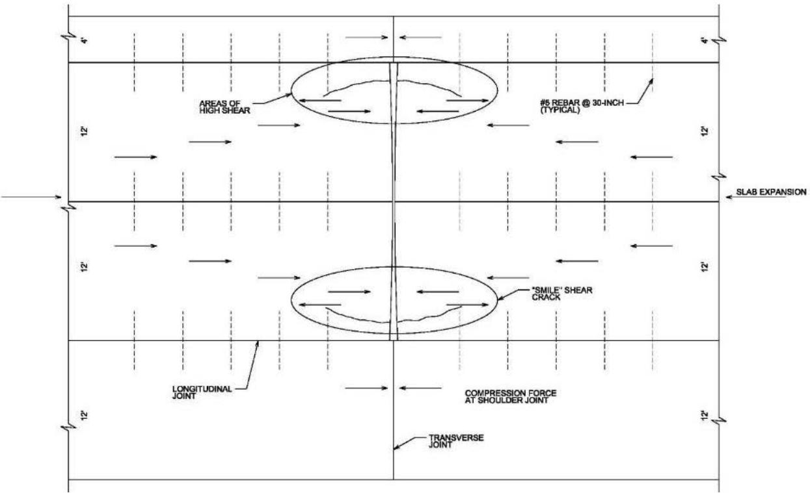
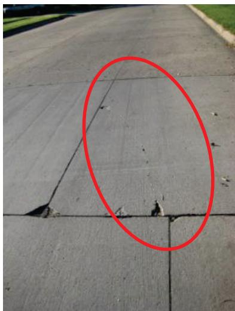
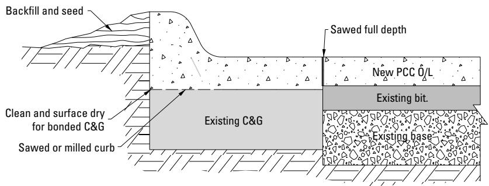
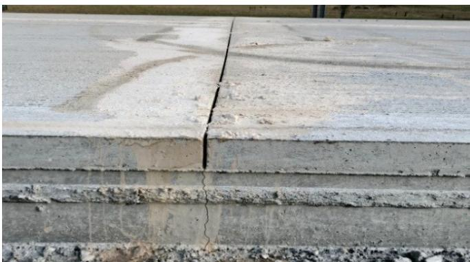
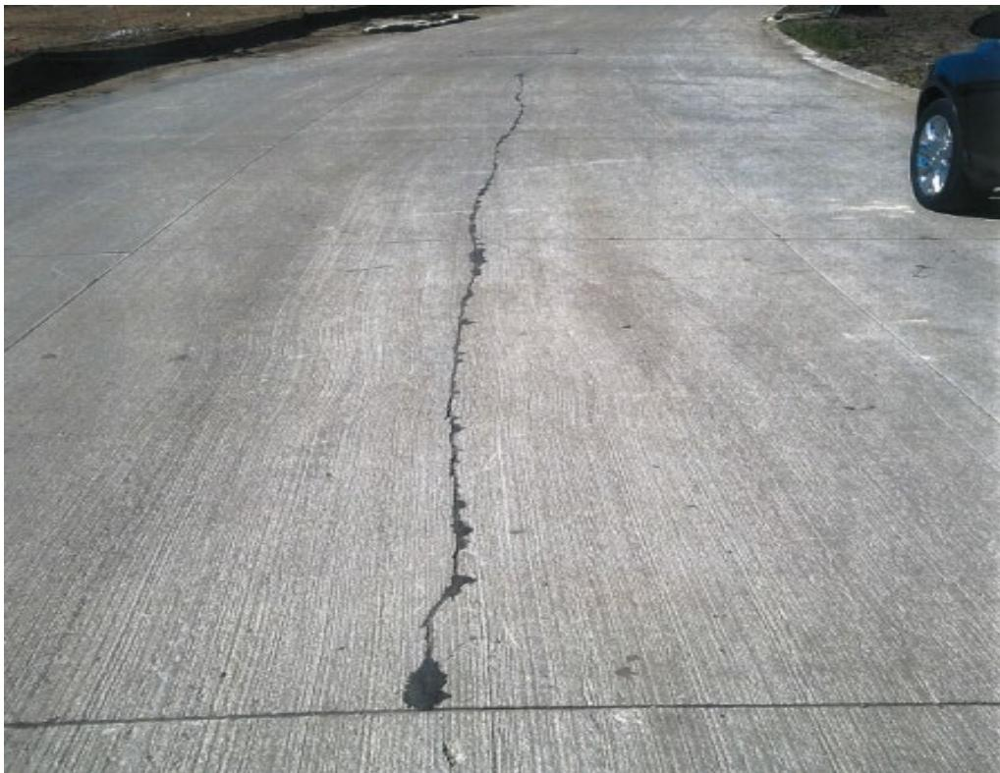
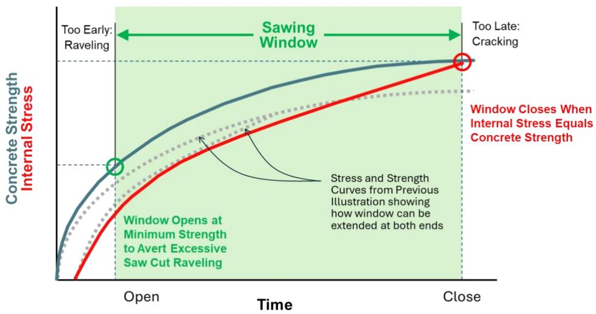
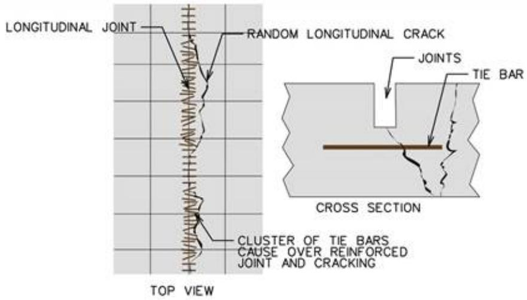
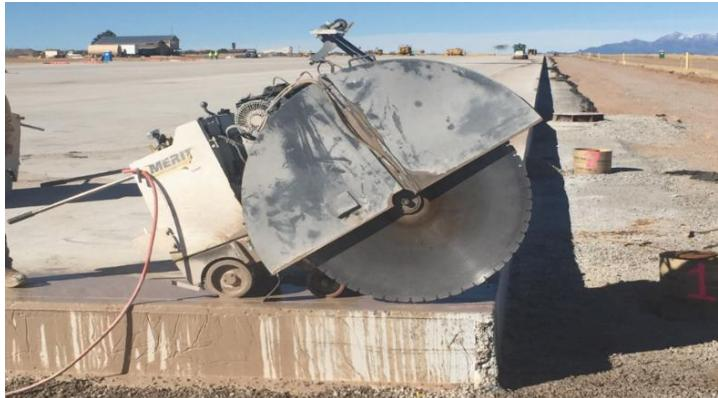

Contraction Cracking Prevention Through Jointing
Contraction‑cracking prevention through jointing is an engineering strategy that addresses the tendency of concrete pavement slabs—such as new highways, airport runways, overlays or parking‑lot surfaces—to develop uncontrolled full‑depth cracks when shrinkage, temperature changes, drying or curling generate tensile stresses exceeding the fresh concrete’s strength[1]. The method controls those stresses by deliberately creating contraction joints—either formed in plastic concrete or sawed at a prescribed time, spacing and depth—so that a weakened plane is available for a crack to open (joint activation) before random cracking can occur, keeping tensile stresses below the material’s capacity[1]. Effective jointing therefore requires short, roughly square panels (typically about 12 ft on a side), transverse spacings no greater than ~15 ft and longitudinal spacings of 10–13 ft, with cuts at least one‑quarter of slab thickness (or one‑third for reinforced joints) and appropriate load‑transfer devices where needed to preserve structural continuity, durability, safety and ride quality[4].
Sources (7)
Purpose and design objectives
The engineering problem tackled by contraction‑cracking prevention through jointing is the propensity of concrete pavement slabs—new pavements, airport runways, overlays, or parking‑lot surfaces—to develop uncontrolled random cracks when shrinkage, temperature fluctuations, moisture loss, curling or warping generate tensile stresses that exceed the concrete’s strength. As the guides state, “Concrete shrinks due to decreases in temperature, drying, and to a lesser extent, volume loss during hydration,” and “This shrinkage, in combination with pavement base restraint, results in the buildup of internal stress in the concrete.” When those stresses become greater than the fresh concrete’s capacity, “a random crack will result,” compromising structural capacity, durability, safety and ride quality. The performance need is therefore a durable, crack‑free surface that can accommodate slab movement without stress concentrations.
Jointing meets this need by providing predetermined planes of weakness. The guides note that “the number, location, and size of early‑age cracks is controlled by constructing (forming or sawing) contraction joints” and that “Contraction joints … control cracking by accounting for concrete shrinkage and panel thermal movements, ensuring cracks form at designated locations.” Proper joint layout must respect dimensional limits: “The magnitudes of temperature, shrinkage, curling, and warping stresses all increase with increasing panel dimensions (up to some limiting value), so panels that are too long or too wide may develop longitudinal or transverse cracks, respectively, as well as diagonal or corner cracks.” To be effective, “joints must be sawed at the correct time, at the correct spacing, and to the correct depth,” and “To be effective in crack control, the joints must be sawn deeply enough so that the resulting section of concrete below the saw cut has a higher ratio of stress/strength to protect other areas from cracking.” When executed correctly, joint activation occurs: “Joint activation (also called joint deployment) refers to the development of a crack (a working joint) below the sawcut made at a contraction joint,” thereby limiting uncontrolled cracking and preserving pavement performance. [1][2][3][4][5][6][7]
The following figure illustrates specific joint details used in airport concrete pavements.
 Joint details used in airport concrete pavements (FAA 2021). [2]
Joint details used in airport concrete pavements (FAA 2021). [2]
The figure displays cross-sectional diagrams of various joint types, including contraction joints with tie bars and dowels, construction joints, isolation joints, and a detailed view of an isolation joint sealant assembly. The inclusion of dowels in the contraction joint details demonstrates how load transfer is maintained across these weakened planes to preserve structural continuity while allowing for movement.
[1] — Ch. 6 (pp. 175–182), Ch. 8 (pp. 254–255), Ch. 10 (p. 322); [2] — Ch. 5 (pp. 262–266); [3] — Ch. 4 (pp. 115–212); [4] — Contraction Joints (pp. 24–25); [5] — Ch. 3 (p. 31); [6] — 2. Factors Influencing Long-Li… (p. 21); [7] — Contraction Joints (p. 30), Jointing for Parking Lot Overl… (pp. 29–30)
The jointing system for concrete pavements must satisfy interrelated functional, structural, durability, safety and serviceability objectives. Functionally it must provide a predetermined plane that directs shrinkage stresses so that cracks occur only where intended; as the guides state, “the number, location, and size of early‑age cracks is controlled by constructing (forming or sawing) contraction joints” and “Transverse and longitudinal joints are designed and constructed in JPCP to allow slab expansion and contraction, and to prevent cracking.” Moreover, because “Concrete shrinks with decreasing temperature and moisture loss as it ages, stresses set up by restraint of this movement will cause random cracking unless joints are cut in the concrete at the appropriate time and spacing,” joints must be placed to “minimize random cracking and facilitate construction.”
Structurally the joint layout must keep tensile stresses below the concrete’s capacity and preserve slab continuity. The guides note that “Structurally the joint system must keep those tensile stresses below the concrete’s tensile strength; this is achieved by spacing transverse joints no more than about 15 ft and longitudinal joints 10–13 ft apart…” and that “load transfer mechanisms such as dowels are required where joint opening could exceed aggregate interlock to maintain structural continuity.” In addition, “The formation or sawing of a system of joints is essential for controlling crack locations and preventing the development of excessive stresses at critical locations, especially while the concrete is young and relatively weak,” and “structurally it must provide sufficient restraint through proper spacing—typically at intervals equal to the trail width—and, where required on wider trails, a tied longitudinal joint using #4 deformed bars spaced 36 in. apart to prevent panel separation.” Proper panel dimensions are also mandated: “Joint layout should keep panel dimensions small enough to avoid width‑to‑length ratios above 1.5, eliminate mismatched joints, and provide isolation for embedded objects, thereby preserving structural integrity, smooth ride quality, and long‑term serviceability.”
Durability objectives require timely joint cutting, appropriate depth, and control of joint opening. The manuals stress that “Durability requires that the joints be cut at the proper time—neither too early, which would cause raveling, nor too late…” and that “Header Construction – Transverse construction joints … must be carefully constructed to ensure longterm pavement durability.” Tight joint widths prevent moisture‑related damage: “If the joint/crack width is kept tight and the incompressibles are minimized, deflection spalling can be prevented.” For trail applications “the joints must be activated by cuts at least one‑quarter of slab thickness and maintained smooth enough for a comfortable ride,” while uncontrolled cracking “can lead to faulting and reduced durability of the system.” Overlay designs add that “durability is achieved by keeping panel dimensions within a limit tied to the overlay thickness and by cutting joints promptly to avoid curling stresses that cause edge delamination.”
Safety is achieved by eliminating unexpected cracks and hazardous joint gaps. The sources explain that “Safety is served by preventing unexpected cracks that could create hazards, maintaining a smooth, ride‑able surface…” and that joints must “prevent random cracking that could compromise … safety.” For bicycle trails, “If the gap becomes wide enough, a bicycle tire can become lodged, resulting in injury to the bicyclist,” while parking‑lot overlays note that “safety and serviceability are further addressed through spacing adjustments… so the surface remains smooth and safe for traffic.”
Serviceability demands consistent joint performance, ride quality, and long‑term functionality. The guides state that “Serviceability is preserved through controlled cracking and consistent joint performance…” and that “Together these requirements ensure that the pavement remains … delivers long‑term performance over its design life.” Trail guidance adds that “serviceability demands that saw cuts be narrow (as little as 1/8 in.) to minimize tire reaction and preserve ride quality.”
Thus, across all references, contraction‑cracking prevention through jointing must meet these functional, structural, durability, safety and serviceability objectives. [1][2][3][4][6][7]
[1] — Ch. 6 (pp. 175–182), Ch. 8 (pp. 254–255); [2] — Ch. 5 (pp. 262–266); [3] — Ch. 4 (pp. 139–212); [4] — Contraction Joints (pp. 24–25); [6] — 2. Factors Influencing Long-Li… (p. 21); [7] — Jointing for Parking Lot Overl… (pp. 29–30)
Scope and applicability
The guides agree that contraction‑cracking prevention through jointing is appropriate for any “jointed pavement (the majority of concrete pavements)” where shrinkage or temperature changes would otherwise cause random full‑depth cracking. It is applied to plain (unreinforced) slab sections, airport runways and taxiways, urban street intersections, multi‑lane highway decks, trail paths, parking‑lot overlays, and other long‑life slab systems that require control of panel size.
For plain concrete the method “constructs an adequate system of joints in unreinforced concrete pavement” to “prevent the formation of random transverse and/or longitudinal cracks.” Joints may be formed or sawed while the concrete is still plastic or green – “A joint can be initiated in plastic concrete or green concrete” – and are spaced according to slab thickness, aggregate type, subbase condition and climate; typical limits are “about 15 ft” transverse spacing and “10 to 13 ft” longitudinal spacing.
Airport pavements use “sawed joints” that “create a weakened plane in the pavement where cracks will form in a controlled manner, preventing random cracking that could compromise a pavement’s structural capacity, durability and safety.” Dowels are frequently required in the last three joints before a free edge or when subgrade support is low – “dowels … are also considered when subgrade support is very low (less than 100 psi/in).”
In multi‑lane streets and intersections the guides stress that “careful consideration should be given to the layout of joints across multiple pavement lanes,” with joints aligned through shoulders or curbs “to prevent sympathy cracks.” Where alignment cannot be achieved, “an isolation joint may be needed to prevent sympathy cracking.” Panel dimensions follow the rule that length or width “should no more than twice the slab thickness (expressed in inches),” which typically yields “12‑by‑12 ft panels for 6‑inch slabs.”
Trail pavements use transverse joints spaced at intervals equal to the trail width, and a center longitudinal joint is omitted on paths “12 ft wide or narrower.” Wider trails may include a longitudinal joint tied with #4 deformed bars “36 in. apart,” and all cuts must reach “at least ¼ of slab thickness” for proper activation.
Parking‑lot overlays – especially bonded overlays over asphalt – employ small square panels “typically in the range of 4 to 6 ft,” with panel dimensions limited to “1.5 times the overlay thickness in inches.” For heavier traffic or thicker slabs (≥7 in.) “dowels are necessary only in construction joints and contraction joints in access ways or truck lanes.”
Across all applications, joint depth is critical: cuts should be at least one‑third of slab thickness for longitudinal joints (“This is usually accomplished by sawing longitudinal joints to a depth of one‑third the slab thickness”) and at least “one‑quarter of the slab thickness” for saw‑cut joints in overlays. Where higher resistance to sympathy cracking is required, “the use of steel or synthetic fiber‑reinforced concrete may resist sympathy cracking at a higher pavement cost.” [1][2][3][4][6][7]
[1] — Ch. 6 (pp. 175–182), Ch. 8 (pp. 254–255), Ch. 10 (p. 322); [2] — Ch. 5 (pp. 262–266); [3] — Ch. 4 (pp. 123–208); [4] — Contraction Joints (pp. 24–25); [6] — 2. Factors Influencing Long-Li… (p. 21); [7] — Contraction Joints (p. 30), Jointing for Parking Lot Overl… (pp. 29–30)
The guides note that jointing loses its effectiveness when several practical limits are exceeded. If more than one lane width of unreinforced concrete is placed at once, cut or form longitudinal joints between lanes where cracks will form. Joint intersection angles less than 60° must be avoided, and slabs should be kept short and relatively square; odd‑shaped slabs also diminish joint performance. When joints cannot be aligned across all lanes, shoulders, or curbs—preventing continuous contraction joints—or when T‑joint intersections are unavoidable, the risk of sympathy cracking rises, often requiring isolation joints or supplemental reinforcement. Panels that become too long or wide increase temperature, shrinkage, curling and warping stresses; a common rule of thumb limits panel length or width to no more than twice the slab thickness, and slabs with a width/length ratio greater than 1.5 are similarly problematic. Widened lanes further demand consideration of slab thickness, foundation stiffness, climate, and may necessitate additional longitudinal joints. In‑pavement utilities that cannot be isolated with boxouts should be accommodated by wrapping them with pliable expansion joint filler or casting the structure directly into the concrete; otherwise they should be avoided. Where these conditions exist, designers are urged to consider alternatives such as isolation joints, increased slab thickness, modified joint spacing, improved base stiffness, supplemental reinforcing bars at T‑joints, or the use of steel or synthetic fiber‑reinforced concrete despite higher cost. [1][3][6]
The following figure illustrates transverse cracking resulting from excessive slab lengths.
 Transverse cracking caused by excessive slab lengths (20-foot panel) [3]
Transverse cracking caused by excessive slab lengths (20-foot panel) [3]
The image displays a full-depth transverse crack running across a concrete pavement surface, intersecting a painted white line. This figure illustrates the failure mode of uncontrolled cracking that occurs when joint spacing is excessive and tensile stresses exceed the material’s capacity.
[1] — Ch. 6 (p. 182); [3] — Ch. 4 (pp. 115–154); [6] — 2. Factors Influencing Long-Li… (p. 21)
Design inputs and requirements
The design of contraction‑cracking prevention through jointing must incorporate site layout considerations such as the geometry of an urban intersection, traffic information like lane widths which dictate typical 12‑by‑12 ft panel dimensions, material data including the nominal slab thickness, geotechnical inputs on base stiffness and friction/bond that govern maximum joint spacing, and existing‑condition details such as current pavement joints and any in‑pavement structures (manholes, valves, drainage) that may require boxouts or isolation joints. Environmental factors are not specifically called out in the excerpt. [3]
The following figure illustrates the consequences of this design process when environmental or construction factors, such as restraint from an adjacent lane, compromise joint performance.

Diagram of longitudinal cracking in existing pavement with activated joints when joint movement is restrained by tying on a new adjacent lane. [3]The figure illustrates the mechanism of longitudinal cracking that occurs when a new shoulder pavement is tied to an existing mainline pavement, creating excessive restraint against thermal expansion. The diagram depicts how ‘dominant joints’ in the existing slab fail to close completely during thermal expansion because they are blocked by the adjacent continuous concrete, leading to high shear stresses and ‘smile’ cracks.
[3] — Ch. 4 (pp. 153–154)
Design of contraction‑crack control joints must satisfy a hierarchy of standards, specifications, performance requirements, and project constraints that appear across the guides. The American Concrete Pavement Association criteria state that “For unreinforced concrete pavement, joint spacing or slab length depends upon slab thickness, concrete aggregate, subbase, and climate (ACPA 1991).” In addition, “In most areas, the typical maximum transverse joint spacing for unreinforced (plain) pavement is about 15 ft (ACPA 2013).” Longitudinal joints are limited to “Longitudinal joints are typically about 10 to 13 ft apart,” and when a pour exceeds one lane width “If more than one lane width of unreinforced concrete is placed at once, cut or form longitudinal joints between lanes where cracks will form.” Jointing plans must be prepared: “Prepare a jointing plan.” Joints must be coordinated: “Match and align joints.” and “Avoid joint intersection angles less than 60o .” Panel dimensions are constrained to short, square panels – “Keep slabs short (~12 feet) and relatively square,” and the width‑to‑length ratio shall not exceed 1.5: “Mismatched joints, slabs with a width / length ratio greater than 1.5, and embedded objects (manholes, inlets, utility service accesses, etc.) without isolation joints should be avoided.” Joint spacing must reflect slab thickness and base conditions: “A maximum joint spacing for the slab thickness and base conditions should be used in the general layout of the transverse joints, and typically longitudinal joints will be laid out to match traffic lane widths,” and “A maximum joint spacing should be selected with consideration of the nominal slab thickness and base conditions (stiffness and friction/bond).” Design tools referenced by standards reinforce these limits: “Design software such as the AASHTO Pavement ME Design Procedure (AASHTO 2015) and OptiPave 2 (TCPavements) directly consider panel size as an input into the design process and consider a range of other design and environmental factors to enable design engineers to determine suitable panel dimensions for a specific set of design conditions.” For overlays, panel size is limited by thickness: “the length and width of joint squares in feet be limited to 1.5 times the overlay thickness in inches,” with allowable variation near fixed points: “permitting gradual joint spacing adjustments of up to +/-10 percent in the last two or three panels adjacent to the fixed point.” Joint depth requirements are specified: “Both saw cuts and tooling should be at a depth of at least ¼ of slab thickness to achieve proper joint activation,” and for conventional sawing “The depth of the joint should be at least one-quarter of the slab thickness when using a conventional saw or 1 to 1½ in. when using an early-entry saw.” Reinforced joints require deeper cuts: “To be effective in crack control, the joints must be sawn deeply enough so that the resulting section of concrete below the saw cut has a higher ratio of stress/strength to protect other areas from cracking. This is usually accomplished by sawing longitudinal joints to a depth of one-third the slab thickness…,” and “While unreinforced and doweled joints have historically been sawed to 1/4 the slab thickness, the presence of deformed tie bars across most sawed longitudinal joints necessitates a deeper cut (one-third the slab thickness) to offset the joint reinforcing…” Specific reinforcement rules apply: trail designs call for “it is recommended to tie the joint with 36 ft long #4 deformed bars, 36 in. apart,” and longitudinal centerline joints are omitted on paths ≤12 ft wide: “Longitudinal joints along the center of the pavement are not required on paths that are 12 ft wide or narrower.” Airport pavements must follow aviation specifications: “FAA’s AC 150/5320-6G and DOD’s UFGS 32 13 14.13 provide details and descriptions of the types of joints used by each agency,” with dowel placement limited to the last three contraction joints before a free edge: “both the FAA’s and the DOD’s standards only require dowels in the last three contraction joints prior to a free edge (end of runway, taxiway, etc.).” Dowel use is also considered when subgrade support is low: “In DOD projects, dowels are also considered when subgrade support is very low (less than 100 psi/in).” Joint widths are controlled for traffic exposure: “A narrow joint width, generally 1⁄16 to ⅛ in. wide, is common for unsealed joints,” while sealed joints require wider cuts: “Cuts at least ¼ in. wide are required for sealed joints, and ⅜ in. wide cuts are commonly recommended.” Inserts of plastic or metal are prohibited: “Plastic or metal inserts … are not recommended for creating a contraction joint in any pavement subject to wheeled traffic.” Finally, longitudinal joints must avoid wheel paths: “any longitudinal contraction joints in access roads or truck lanes should be arranged so that they are not in the wheel paths.” Compliance with these standards and constraints constitutes the governing framework for preventing contraction cracking through jointing. [1][2][3][4][6][7]
The following figure illustrates an example of poor joint detailing that violates these established standards.

Example of Poor Joint Detailing [6]The image displays a concrete pavement surface where the transverse joints are misaligned, creating an offset rather than a continuous straight line. A random crack has formed in the slab between these mismatched joints, illustrating how improper joint layout fails to control tensile stresses generated by shrinkage and temperature changes. This visual evidence supports the engineering principle that mismatched joints must be avoided to prevent uncontrolled full-depth cracking.
[1] — Ch. 6 (p. 182), Ch. 8 (pp. 254–255); [2] — Ch. 5 (pp. 262–266); [3] — Ch. 4 (pp. 115–154); [4] — Contraction Joints (pp. 24–25); [6] — 2. Factors Influencing Long-Li… (p. 21); [7] — Contraction Joints (p. 30), Jointing for Parking Lot Overl… (pp. 29–30)
Design methods and criteria
The guides emphasize that “Construct contraction joints to create planes of weakness where cracks will form and thus relieve stresses.” Contraction‑cracking control is achieved by first preparing a jointing plan that defines slab layout, orientation and spacing. The guides advise to “Prepare a jointing plan.” Panels are kept short—approximately twelve feet—and relatively square (“Keep slabs short (~12 feet) and relatively square.”) with transverse joints placed at regular intervals that match the pavement width or are derived from an empirical maximum joint‑spacing relationship based on slab thickness, aggregate type, subbase quality and climate (“joint spacing or slab length depends upon slab thickness, concrete aggregate, subbase, and climate (ACPA 1991).”). A rule of thumb limits panel length or width to no more than twice the slab thickness expressed in inches versus feet (“the length or width (expressed in feet) should be no more than twice the slab thickness (expressed in inches)”), which for unreinforced plain pavement results in a typical maximum transverse joint spacing of about 15 ft (“the typical maximum transverse joint spacing for unreinforced (plain) pavement is about 15 ft (ACPA 2013).”). Longitudinal joints are spaced to match lane widths or, when more than one lane width is placed at once, are typically 10–13 ft apart (“Longitudinal joints are typically about 10 to 13 ft apart.”; “A maximum joint spacing for the slab thickness and base conditions should be used in the general layout of the transverse joints, and typically longitudinal joints will be laid out to match traffic lane widths.”). For trail pavements the transverse spacing equals the trail width (“Transverse contraction joints should be spaced at intervals equal to the trail width.”) and parking‑lot overlays limit square panel dimensions to 1.5 times the overlay thickness in inches (“the length and width of joint squares in feet be limited to 1.5 times the overlay thickness in inches”), allowing up to ±10 % adjustment near fixed objects (“accommodations have to be made for fixed objects… permitting gradual joint spacing adjustments of up to +/-10 percent”).
Joint activation requires cutting sawed contraction joints within the prescribed “sawing window,” i.e., the optimal period after placement when concrete has sufficient strength but before random cracks appear (“The sawing window … refers to the optimal period after concrete placement during which saws can be used to make contraction joint cuts that will control cracking.”). The timing is dependent on concrete properties, ambient temperature and humidity (“The timing of saw cutting is dependent on concrete properties and the environment.”) and early‑entry equipment is used as soon as the slab can support weight without imprinting (“Joints must be cut as quickly as possible to minimize the development of curling stresses … Early-entry saws are usually used.”). Joint depth is specified as at least one‑quarter of slab thickness for unreinforced or doweled joints (“unreinforced and doweled joints have historically been sawed to 1/4 the slab thickness”) and one‑third for reinforced joints (“sawing longitudinal joints to a depth of one-third the slab thickness”). For trail panels wider than twelve feet, a longitudinal joint is tied with thirty‑six‑foot #4 deformed bars spaced three feet apart (“it is recommended to tie the joint with 36 ft long #4 deformed bars, 36 in. apart.”). Tie bars are generally omitted for light‑vehicle areas where panel sizes are small (“the use of tie bars in parking lots for light vehicles is not necessary because of the small panel spacings”).
Load transfer across selected joints is provided by dowel bars (Types B, C or D) placed in basket assemblies (“Dowels placed in basket assemblies are frequently required by project plans and specifications for use in airport pavement contraction joints (Type C).”). The QC manager must verify dowel alignment, embedment depth, hole diameter and epoxy application, as well as joint edge quality before using deep‑cut diamond blades or gang drills. Supplemental reinforcement may include No. 4 deformed bars placed two inches below the surface and spaced three to six inches from the joint face, or the use of steel or synthetic fiber‑reinforced concrete for additional resistance.
Design tools employed include ACPA design tables and Joint Sawing procedures (Chapter 8) that provide equations for joint spacing and the governing equation from ACPA 1991, as well as modern software such as the AASHTO Pavement ME Design Procedure and OptiPave 2 which automatically incorporate panel dimensions, base stiffness, climate and traffic inputs (“Design software such as the AASHTO Pavement ME Design Procedure (AASHTO 2015) and OptiPave 2 (TCPavements) directly consider panel size as an input into the design process”). Additional practical measures stress keeping joint or crack width tight (“If the joint/crack width is kept tight”), minimizing incompressible material, using a low‑deformation stabilized subbase (“use a subbase with low deformation properties such as a stabilized subbase”) and ensuring proper consolidation to achieve adequate strength at the joint face (“proper consolidation of the concrete pavements provides proper strength of the joint face”). [1][2][3][4][7]
The following figure illustrates an example of slab cracking output generated by the AASHTOWare Pavement ME Design software.
 Example slab cracking output from AASHTOWare Pavement ME Design software [3]
Example slab cracking output from AASHTOWare Pavement ME Design software [3]
It compares two reliability curves against a horizontal threshold value, showing that the predicted cracking at specified reliability remains below this limit throughout the analysis period. This output demonstrates how modern software tools can be used to develop pavement designs that address fatigue-based transverse and diagonal cracking by ensuring traffic-induced damage stays within acceptable limits.
[1] — Ch. 6 (p. 182), Ch. 8 (pp. 254–255); [2] — Ch. 5 (pp. 262–266); [3] — Ch. 4 (pp. 115–212); [4] — Contraction Joints (pp. 24–25); [7] — Jointing for Parking Lot Overl… (pp. 29–30)
Structural section and dimensions
The guides specify joint and panel dimensions for concrete pavements aimed at preventing contraction cracking. Transverse joints are limited to a typical maximum spacing of about 15 ft for unreinforced pavement, while another recommendation ties the spacing to the trail width. Longitudinal joints are commonly spaced between 10 ft and 13 ft; on trails wider than 12 ft a center joint may be provided, whereas on pavements 12 ft wide or less it is not required. Panel length or width shall not exceed twice the slab thickness—an 8‑inch slab therefore limits panels to 16 ft or less. Longitudinal joints are cut to a depth of one‑third the slab thickness and must extend at least a few feet (~1 m) on either side of a T‑stem. Transverse cuts shall reach at least one‑quarter of the slab thickness, with saw‑cut widths typically between 1/8 in and 1/4 in (early‑entry blades can produce as narrow as 0.10 in). Supplemental reinforcement consists of two No. 4 (½‑inch) deformed bars about 3 ft long placed at least 2 in below the surface and positioned 3 in and 6 in from the joint face; on wider trails the joints are tied with #4 deformed bars 36 ft long spaced 36 in apart. The excerpts do not provide dimensional requirements for base, subbase, treated‑soil, slab thickness beyond the panel limit, shoulder, or edge support. [1][3][4]
The following figure illustrates the consequences of omitting these specified joints.
 Longitudinal cracking in pavement due to the lack of a longitudinal joint [3]
Longitudinal cracking in pavement due to the lack of a longitudinal joint [3]
The image displays a concrete surface with a visible, irregular crack running parallel to the white edge line. This visual evidence demonstrates how panels that are too wide may develop longitudinal cracks when shrinkage and temperature stresses exceed the material’s capacity. The figure illustrates the necessity of forming a system of joints to control crack locations and prevent the development of excessive stresses at critical locations.
[1] — Ch. 8 (pp. 254–255); [3] — Ch. 4 (pp. 139–154); [4] — Contraction Joints (pp. 24–25)
To limit contraction cracking the overlay should be divided into small square panels whose side length does not exceed 1.5 times the overlay thickness (in inches) and normally falls between four and six feet; joint spacing may be varied up to about ten percent near fixed objects, with tighter spacing recommended for heavy‑truck lanes and with longitudinal joints kept out of wheel paths. Joints are cut early with an early‑entry saw to avoid curling stresses. Tie bars are generally omitted for light‑vehicle areas unless the overlay is five inches or thicker in access ways or truck lanes, while dowels are required only in construction or contraction joints where panel thickness reaches seven inches and traffic exceeds automobiles or pickups. [7]
The figure below illustrates a sawed or milled curb with overlay detail to demonstrate proper jointing execution.

Cross-section detail of a sawed curb joint for concrete overlay construction. [7]The figure displays a cross-sectional view of an existing concrete and gravel (C&G) base overlaid with new Portland cement concrete (PCC). A vertical sawed full depth cut is shown separating the new overlay from a milled curb, creating a joint plane.
[7] — Jointing for Parking Lot Overl… (pp. 29–30)
Materials and mixture design
The jointing specification shall identify the concrete mix’s cementitious material content, its water‑to‑cementitious‑material (w/cm) ratio, and the hardness of the coarse aggregate. It must also record the temperature of the fresh concrete and the ambient conditions at placement because these mixture properties determine the allowable sawing window that controls contraction cracking. Reinforcement requirements include deformed #4 (½‑inch) steel bars; two 3‑ft lengths placed at least 2 in below the pavement surface and positioned 3 in and 6 in from each joint face are acceptable, while for wider trail pavements (>12 ft) the specification calls for #4 deformed bars 36 ft long spaced 36 in apart. The concrete mix may be required to be steel‑reinforced or synthetic fiber‑reinforced to improve resistance to sympathy cracking. A stabilized subbase with low deformation properties shall be used, and steel dowel bars are installed in the joints to maintain load transfer and limit spalling. Proper consolidation of the concrete is required so that the joint face attains adequate strength. [2][3][4]
The following figure illustrates the installation of steel dowel bars using a specialized inserter on a paving machine.
 Close-up of the dowel bar inserter on a paving machine Hoegh and Khazanovich 2009, University of Minnesota [3]
Close-up of the dowel bar inserter on a paving machine Hoegh and Khazanovich 2009, University of Minnesota [3]
The image displays a close-up view of a mechanical assembly mounted to a concrete paver, featuring vertical guides holding cylindrical purple dowel bars in position. Proper placement of these bars is critical for load transfer, as misalignment or poor anchoring can cause the joint to lock up during concrete contraction and result in spalling.
[2] — Ch. 5 (pp. 262–266); [3] — Ch. 4 (pp. 139–212); [4] — Contraction Joints (pp. 24–25)
Structural details and interfaces
“the formation or sawing of a system of joints is essential for controlling crack locations and preventing the development of excessive stresses” is the overarching requirement. The guides identify three joint types that are routinely specified: “The three types of joints that are commonly used in concrete pavement are contraction joints, construction joints, and isolation joints.” Contraction joints provide predetermined planes of weakness; “A contraction joint predetermines the location of cracks caused by restrained shrinkage of the concrete and by the effects of loads and warping or curling.”
Transverse contraction joints are cut across the slab at intervals dictated by slab thickness, base stiffness, or simply the width of the element. For plain pavement the typical maximum spacing is about 15 ft (“In most areas, the typical maximum transverse joint spacing for unreinforced (plain) pavement is about 15 ft”); other sources limit panel dimensions to “the length and width of joint squares in feet be limited to 1.5 times the overlay thickness in inches” or require spacing equal to the trail width (“Transverse contraction joints should be spaced at intervals equal to the trail width.”). Joints must be cut at the proper time, depth and width: “joints must be sawed at the correct time, at the correct spacing, and to the correct depth”, with a minimum depth of one‑quarter slab thickness (“The depth of the joint should be at least one-quarter of the slab thickness when using a conventional saw or 1 to 1½ in. when using an early-entry saw.”) or up to one‑third for reinforced joints (“Joints are sawed to sufficient depth—typically one‑third of slab thickness for reinforced joints—to leave enough concrete strength below the cut.”). Joint widths range from 1⁄16–⅛ in. for unsealed joints (“A narrow joint width, generally 1⁄16 to ⅛ in. wide, is common for unsealed joints.”) to ≥¼ in. for sealed joints (“Cuts at least ¼ in. wide are required for sealed joints”).
Longitudinal joints control cracking along the lane direction and serve as lane markers. They are typically spaced 10–13 ft (“Longitudinal joints are typically about 10 to 13 ft apart and serve the dual purpose of crack control and lane delineation.”) and must be cut when more than one lane width is placed at once (“If more than one lane width of unreinforced concrete is placed at once, cut or form longitudinal joints between lanes where cracks will form”). For narrow trails (≤12 ft) they are not required (“Longitudinal joints along the center of the pavement are not required on paths that are 12 ft wide or narrower.”); when used on wider trails they are tied with #4 deformed bars spaced three feet apart (“In trails wider than 12 ft with a longitudinal joint, it is recommended to tie the joint with 36 ft long #4 deformed bars, 36 in. apart.”).
Isolation joints separate slabs from adjacent pavements, utilities or embedments. They are described as “Isolation Joints (Type A)– Isolation joints are special joints designed to separate the pavement being constructed from adjacent pavements, embedded items, or other slab penetrations.” A thickened‑edge detail may increase panel thickness by 25 percent (“FAA provides a detail for a thickened edge isolation joint (Type A) which requires increasing the nominal panel thickness by 25 percent”). Isolation joints are also used at T‑joint intersections, where “Match joints exactly and make the top of the T an isolation joint for at least a few feet (~1 m) on either side of the stem of the T”.
Construction (header or basket) joints provide continuity between paving days. They require load‑transfer devices: “Load transfer is provided by dowel bars or purpose‑designed tie‑bar systems that keep the joint tight; a stabilized low‑deformation subbase further maintains joint closure and limits spalling.” Dowels are commonly placed in basket assemblies, with many specifications requiring them only in the last three contraction joints before a free edge (“Dowels placed in basket assemblies are frequently required … however … only require dowels in the last three contraction joints prior to a free edge”). When subgrade support is low or the base is unstabilized, dowelling may be extended along the entire runway. For heavy‑truck traffic and overlay thicknesses of 7 in. or more, “Dowels are necessary only in construction joints and contraction joints in access ways or truck lanes …” and tie bars may be used as an alternative.
Reinforcement is optional for plain slabs but may be provided to resist sympathy cracking. One source specifies: “Reinforcement may consist of two No. 4 (½‑in) deformed bars, about 3 ft long, placed at least 2 in below the surface and spaced 3 in and 6 in from the joint face, or steel/fiber‑reinforced concrete to resist sympathy cracking.” Other guides note that no reinforcement or load‑transfer system is required when only contraction joints are used for unreinforced pavement.
Joint layout must avoid mismatches and excessive panel ratios. “Mismatched joints, slabs with a width / length ratio greater than 1.5, and embedded objects … without isolation joints should be avoided.” Panel dimensions are limited so that length or width does not exceed twice the slab thickness (“maximum panel dimension is that the length or width (expressed in feet) should be no more than twice the slab thickness (expressed in inches)”). Diagonal joints may be used to transition between joint patterns (“Use diagonal joints to transition from one joint pattern to another”).
All transverse and longitudinal joints, as well as isolation joints around utilities, are sealed to keep out moisture and incompressible materials (“all transverse and longitudinal joints are sealed to exclude moisture and incompressable materials”). Proper sealing together with a low‑deformation subbase helps maintain tight joint closure and reduces spalling (“Dowel bars also substantially reduce the potential for this type of spalling.”).
Finally, activation of contraction joints is described as “Joint activation (also called joint deployment) refers to the development of a crack (a working joint) below the sawcut made at a contraction joint,” and “activation mechanisms are also driven by certain pavement design parameters, including joint spacing, overlay thickness, and type of separation layer used.” [1][2][3][4][5][6][7]
The figure below illustrates an activated transverse joint.

Activated transverse joint in concrete pavement [4]The image displays a close-up view of a concrete slab featuring a vertical separation along its length.
[1] — Ch. 6 (pp. 175–182), Ch. 8 (pp. 254–255); [2] — Ch. 5 (pp. 262–266); [3] — Ch. 4 (pp. 115–212); [4] — Contraction Joints (pp. 24–25); [5] — Ch. 3 (p. 31); [6] — 2. Factors Influencing Long-Li… (p. 21); [7] — Contraction Joints (p. 30), Jointing for Parking Lot Overl… (pp. 29–30)
“Prepare a jointing plan.” Joints are then “Match and align joints” across all slabs, shoulders and curbs so that panels remain short—about twelve feet on a side—and roughly square. Panel dimensions are limited to avoid excessive stresses: “The magnitudes of temperature, shrinkage, curling, and warping stresses all increase with increasing panel dimensions (up to some limiting value), so panels that are too long or too wide may develop longitudinal or transverse cracks.” “Mismatched joints, slabs with a width / length ratio greater than 1.5, and embedded objects (manholes, inlets, utility service accesses, etc.) without isolation joints should be avoided.” Where new concrete meets adjacent pavements, utilities or other slab penetrations, “Isolation joints are special joints designed to separate the pavement being constructed from adjacent pavements, embedded items, or other slab penetrations.” A thickened‑edge detail may increase panel thickness by 25 %: “FAA provides a detail for a thickened edge isolation joint (Type A) which requires increasing the nominal panel thickness by 25 percent.” In‑pavement structures are accommodated with boxouts and perimeter isolation joints: “Accommodate in‑pavement structures through jointing and boxouts.” Contraction joints control shrinkage and thermal movements: “Contraction joints … control cracking by accounting for concrete shrinkage and panel thermal movements, ensuring cracks form at designated locations.” Saw cuts are made deep enough—typically one‑third of slab thickness—to achieve effective crack control: “This is usually accomplished by sawing longitudinal joints to a depth of one‑third the slab thickness.” In trail applications the depth may be at least one‑quarter: “Both saw cuts and tooling should be at a depth of at least ¼ of slab thickness to achieve proper joint activation.” Joint spacing follows prescribed limits, often equal to the slab width for transverse joints: “Transverse contraction joints should be spaced at intervals equal to the trail width.” Joint intersections are avoided or treated with isolation segments, full‑depth holes or diagonal transitions: “Avoid joint intersection angles less than 60°.” “Match joints exactly and make the top of the T an isolation joint for at least a few feet (~1 m) on either side of the stem of the T to reduce the stress concentration.” “Drill, core, or form a hole through the full thickness of the pavement at the joint intersection.” Load transfer is provided by dowels in the last three contraction joints before a free edge or where subgrade support is low: “Dowels placed in basket assemblies are frequently required… only require dowels in the last three contraction joints prior to a free edge.” Dowel bars also reduce spalling: “Dowel bars also substantially reduce the potential for this type of spalling.” Joint faces are sealed and kept tight to prevent moisture and incompressible material infiltration: “One purpose of sealing joints and cracks in concrete pavement is to reduce infiltration of moisture and incompressible materials for improved pavement performance.” “If the joint/crack width is kept tight and the incompressibles are minimized, deflection spalling can be prevented.” A low‑deformation subbase and proper concrete consolidation further preserve load transfer: “To keep the joint tight use a subbase with low deformation properties such as a stabilized subbase.” “Also, proper consolidation of the concrete pavements provides proper strength of the joint face.” For overlays, small square panels (4–6 ft) limited to 1.5 times overlay thickness in inches are used, with up to ±10 % spacing adjustment near fixed objects: “small, square panels, typically in the range of 4 to 6 ft.” “length and width of joint squares in feet be limited to 1.5 times the overlay thickness in inches.” “accommodations have to be made for fixed objects” “maintain the nominal specified joint spacing while permitting gradual joint spacing adjustments of up to +/-10 percent.” When a longitudinal joint is required on panels wider than twelve feet, tie bars are installed to prevent hazardous gaps: “In trails wider than 12 ft with a longitudinal joint, it is recommended to tie the joint with 36 ft long #4 deformed bars, 36 in. apart.” [2][3][4][6][7]
The following figure illustrates the consequences of improper joint depth on pavement integrity.

Longitudinal cracking due to inadequate saw cut depths of the quarter-point longitudinal joints [3]The image displays a concrete pavement surface featuring a prominent, uncontrolled full-depth crack running longitudinally down the center of the slab. This failure demonstrates the consequence when weakened-plane joints are not created deep enough to control tensile stresses generated by shrinkage and temperature changes. The random nature of the fracture indicates that the slab cracked at a location other than the intended joint, confirming that the saw cut was insufficient to activate the weakened plane before stresses exceeded the concrete’s capacity.
[2] — Ch. 5 (pp. 262–266); [3] — Ch. 4 (pp. 115–212); [4] — Contraction Joints (pp. 24–25); [6] — 2. Factors Influencing Long-Li… (p. 21); [7] — Jointing for Parking Lot Overl… (pp. 29–30)
Drainage, environment, and accessibility
The guides require that contraction‑joint saw cuts be timed according to concrete properties and the environment, placing them within a sawing window that is adjusted for ambient conditions—sudden temperature drops or rain, rapid temperature rises, high winds with low humidity, cool cloudy periods, or hot sunny weather—to avoid raveling or uncontrolled cracking. Joint spacing or slab length is set based on slab thickness, concrete aggregate, subbase, and climate; the climate and coarse‑aggregate characteristics may permit transverse joints to be further apart or require them to be closer together than average. Because concrete shrinks with decreasing temperature and moisture loss as it ages, and differential temperatures and moisture cause curling and warping, reducing panel size through closer joint spacing lessens deflections and stresses. Isolation joints are required around drainage inlets, manholes, utility accesses, and other embedded items so that those penetrations are separated from the slab and can move independently; a thickened‑edge isolation joint increases nominal panel thickness by about 25 %. [1][2][6]
The following figure illustrates how proper curing practices influence the timing of the joint sawing window.

The impact of good curing on the joint sawing window (after ACPA 2011). [2]The figure plots concrete strength and internal stress against time to define a ‘Sawing Window’ bounded by the onset of raveling if cut too early and cracking if cut too late. This visualizes the critical timing strategy for contraction-joint sawing to prevent uncontrolled full-depth cracks in concrete pavement slabs.
[1] — Ch. 8 (pp. 254–255); [2] — Ch. 5 (pp. 262–266); [6] — 2. Factors Influencing Long-Li… (p. 21)
Contraction‑cracking control through jointing must satisfy explicit geometric, safety, accessibility and user requirements. Geometrically, joints “must be sawed at the correct time”, “at the correct spacing” and “to the correct depth”; transverse contraction joints are limited to a maximum spacing of about 15 ft while longitudinal joints are typically spaced 10‑13 ft apart and serve the dual purpose of crack control and lane delineation. Slabs should be kept short—about twelve feet—and relatively square, avoiding odd‑shaped panels, with panel dimensions kept within a width‑to‑length ratio of about 1.5 or less. Joint intersection angles less than 60° shall be avoided and joint spacing must not exceed the maximum allowed for the slab thickness and base stiffness; a maximum joint spacing for the slab thickness and base conditions should be used, and the length or width (expressed in feet) should be no more than twice the slab thickness (expressed in inches). Transverse contraction joints on trails must be spaced at intervals equal to the trail width, and all cuts should be at a depth of at least one‑quarter of the slab thickness (or one‑third where specified) with joint widths narrow—generally 1⁄16 to ⅛ in for unsealed joints and at least ¼ in wide (commonly ⅜ in) for sealed joints. Where exact alignment across lanes is impossible, an isolation joint is required to break the path for sympathy cracking; joints should be carried continuously across the full width of the pavement and through adjacent shoulders or curbs to prevent cracks propagating between lanes.
Safety requirements dictate that “Contraction joints are sawed joints. These joints create a weakened plane in the pavement where cracks will form in a controlled manner, preventing random cracking that could compromise a pavement’s structural capacity, durability and safety.” Dowels are required in the last three contraction joints prior to any free edge to provide load transfer when aggregate interlock is lost, and headers must be constructed at the end of each paving day or after a 30‑minute stoppage to ensure long‑term durability, load transfer and smooth ride quality. Proper finishing and compaction near the joint are essential to prevent honeycombing or weak zones.
Accessibility considerations require longitudinal joints to be aligned with traffic lane widths (typically 12 ft apart) so that vehicle movement is safe, and any longitudinal contraction joints in access roads or truck lanes should be arranged so that they are not in the wheel paths. In‑pavement utilities such as manholes, valves, drainage inlets must be accommodated with boxouts and perimeter isolation joints or pliable expansion fillers to prevent movements that could create cracks compromising accessibility and safety.
User requirements include the dual function of longitudinal joints for crack control and lane delineation, the need for smooth ride quality provided by properly constructed headers, and the use of tie bars or fiber reinforcement designed for the specific slab thickness to maintain a safe, serviceable surface. On wider trails, longitudinal joints must be tied with #4 deformed bars (36 ft long, spaced 36 in apart) to prevent panel separation that could trap bicycle tires. Near fixed objects joint spacing may be adjusted up to ±10 % and it is preferable to decrease the spacing in the last two or three panels adjacent to a fixed point to reduce the potential for corner breaks. [1][2][3][4][6][7]
The following figure illustrates how clustering tie bars can lead to longitudinal cracking along their ends.

Top view and cross section of longitudinal cracking caused by clustered tie bars in a concrete pavement joint. [3]The figure displays a top view and a cross section of a concrete slab featuring a longitudinal joint reinforced with tie bars. It illustrates how the inclusion of too many or clustered tie bars can reinforce the joint, offsetting the effects of sawing and causing cracks to form away from the weakened plane. This visualizes a specific failure mode where improper reinforcement design leads to uncontrolled cracking, which is contrary to the goal of contraction cracking prevention through jointing.
[1] — Ch. 6 (pp. 175–182), Ch. 8 (pp. 254–255); [2] — Ch. 5 (pp. 262–266); [3] — Ch. 4 (pp. 115–154); [4] — Contraction Joints (pp. 24–25); [6] — 2. Factors Influencing Long-Li… (p. 21); [7] — Contraction Joints (p. 30), Jointing for Parking Lot Overl… (pp. 29–30)
Verification and expected performance
The completed contraction‑cracking jointing is verified through a multi‑step review that confirms compliance with specifications, constructability, performance expectations and project consistency. A jointing plan must be prepared and all joints are matched and aligned; intersection angles are checked to be equal to or greater than sixty degrees and slab geometry is kept roughly twelve feet square (or, for bonded overlays, panels of four to six feet square) while also limiting panel dimensions to no more than 1.5 times the overlay thickness in inches. Maximum joint spacing is selected based on nominal slab thickness and the stiffness/bond characteristics of the base, with adjustments permitted only within ±10 percent for the last two or three panels adjacent to fixed objects. The layout submitted by the contractor is reviewed against the specified joint pattern; longitudinal joints are kept out of wheel paths and dowel or tie bars are provided where required. Field conditions such as in‑pavement utilities are accommodated through properly detailed boxouts or isolation fillers, and any necessary field adjustments for existing joints or structures are incorporated.
Compliance with agency specifications (FAA, DOD, ACPA) is confirmed by the QC Manager or engineer who inspects each joint to verify that it is located, sized and detailed exactly as required, that all tolerances are met, and that dowel bars in contraction or construction joints are correctly aligned, embedded to the proper depth, drilled to the correct diameter and epoxied securely. The quality of joint edges, finishing and compaction adjacent to each joint are inspected to prevent honeycombing or weak zones, and concrete is verified to have reached the required opening strength before any saw cuts or dowel‑gang drilling are performed. Prompt early‑entry sawing is confirmed to avoid curling stresses that could cause delamination. Completion of these checks demonstrates compliance, constructability, performance and consistency with the project requirements. [2][3][7]
The following figure illustrates a deep saw cut used for a header joint.

A large concrete saw cutting a joint in an airport runway slab. [2]The image shows a heavy-duty walk-behind saw with a large circular blade actively cutting into the edge of a concrete pavement slab.
[2] — Ch. 5 (pp. 262–266); [3] — Ch. 4 (pp. 153–154); [7] — Jointing for Parking Lot Overl… (pp. 29–30)